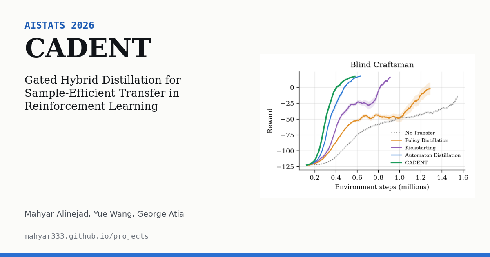
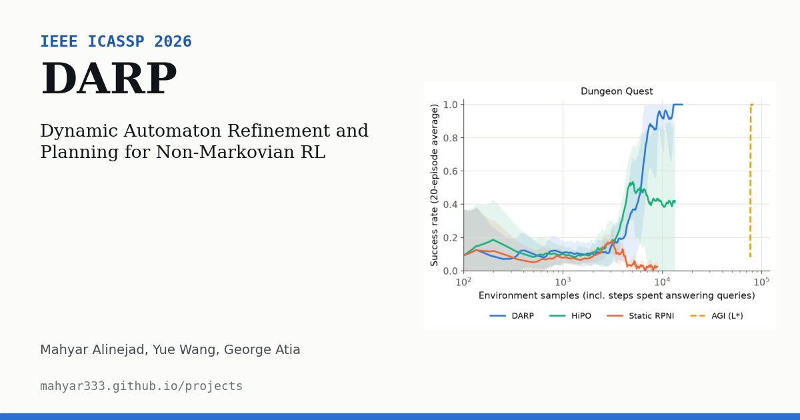
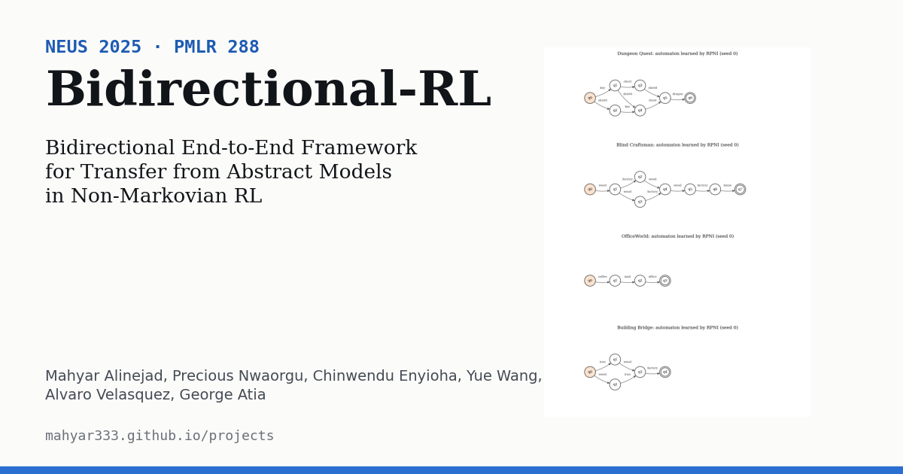
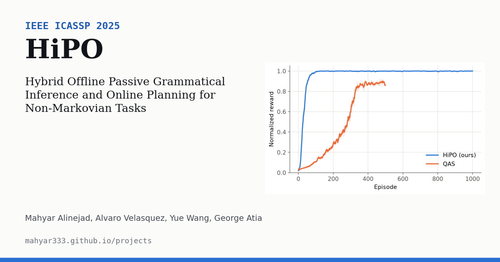

Home / Projects
Research projects
Each project has its own page with the method, results, code and citation.

AISTATS 2026
CADENT: Gated Hybrid Distillation for Sample-Efficient Transfer in Reinforcement Learning
Combine strategic automaton knowledge with tactical policy knowledge, and gate the teacher per state-action by the student's own experience.

IEEE ICASSP 2026
DARP: Dynamic Automaton Refinement and Planning for Non-Markovian RL
Learn the task's automaton while learning the policy, refine it online when outcomes disagree, and explore where it is uncertain. No oracle queries.

NeuS 2025 · PMLR 288
Bidirectional End-to-End Framework for Transfer from Abstract Models in Non-Markovian RL
Learn the task automaton and a teacher simulator from offline data, train a teacher there, and distil its knowledge back into the real environment.

IEEE ICASSP 2025
HiPO: Hybrid Offline Passive Grammatical Inference and Online Planning for Non-Markovian Tasks
Learn the task's automaton from offline data with RPNI, with no environment queries, then plan online on the product MDP.